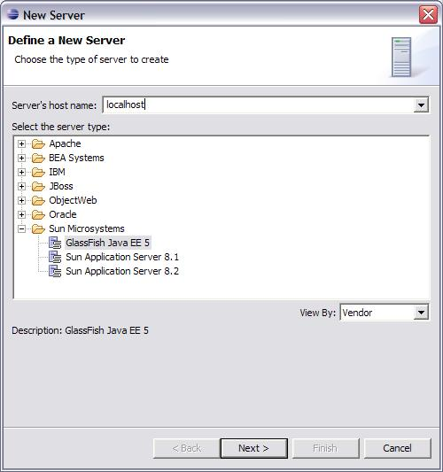

The Eclipse plugin for GlassFish has the following features
Register the Sun Application Server 8.1, 8.2 and the GlassFish Java EE 5 Server
Select and Edit the Server options
Add/Remove Eclipse projects to this Server
display Server Status, and Project Explorer showing the J2EE APIS added to the project.
Creation of default Sun specific Deployment Descriptors for Web Applications and EJB Modules
Deployment of Web Applications, EJB Modules and J2EE applications to the Server
Start/stop the Application Server from Eclipse

And

On the next screen, make sure the Sun DD Files facet is selected (Default). This will create automatically good default content for sun-web.xml and sun-ejb-jar.xml Deployment Descriptors (DD).


(Note the the Sun specific DTDs and Schemas are registered to the Eclipse IDE so that XML validation can be done autmoatically)


We add a JSP file to the web application: (Please refer to the Eclipse tutorials for creating J2EE or Java EE 5 applications)
This application can then be published to the GlassFish Java EE 5 server:


The Application is up and running (I had to replace localhost in the URL with 127.0.0.1 for some weird Eclipse reasons):

You can also Stop the GlassFish Java EE 5 server by clicking on the RED icon in the Servers toolbar.